SimpleCAD
An open-source, sketch-based 3-D construction tool with assembly, technical drawing and thermal simulation, focused on keeping things simple.
Introduction
SimpleCAD is a parametric construction tool written in Python (PyQt5 + OpenGL). Every object starts from a sketch. A sketch is extruded into a solid, and any face of that solid can carry another sketch. Because of this the object tree always shows how the parts depend on each other:
sketch01 → extrusion01 → sketch02 (on a face) → extrusion02 → …All dimensions are in millimetres.
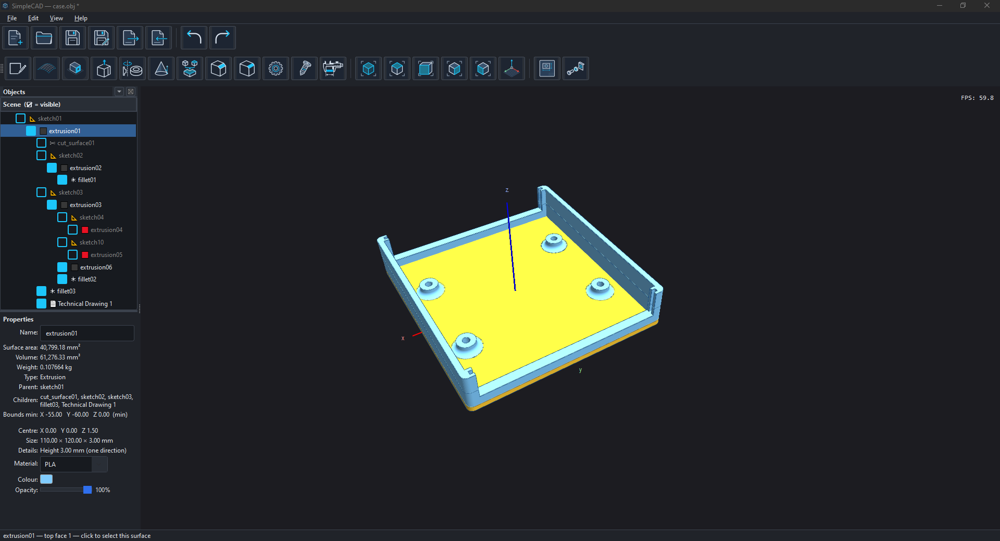
Feature overview
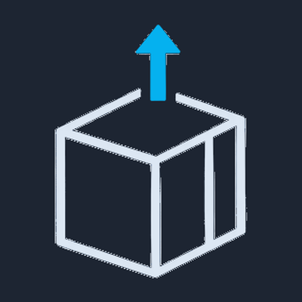
ExtrusionAdd or remove material, from sketches or straight from faces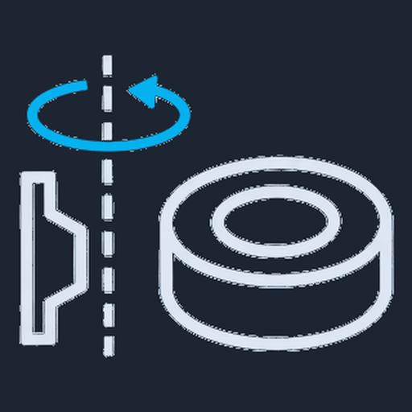
Ring ExtrusionRevolve a profile around an axis, optionally as a helix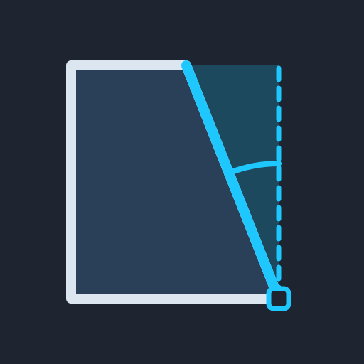
Angle ExtrusionAngled (drafted) shapes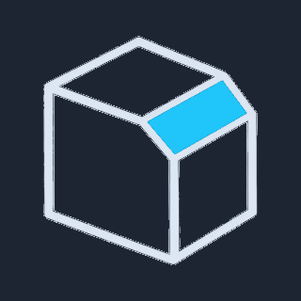
Chamfer / FilletEdge features that follow tangent chains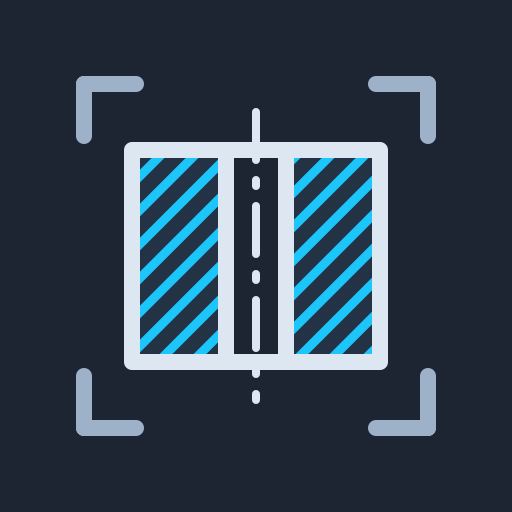
Cut SurfaceClip a body at a plane to look inside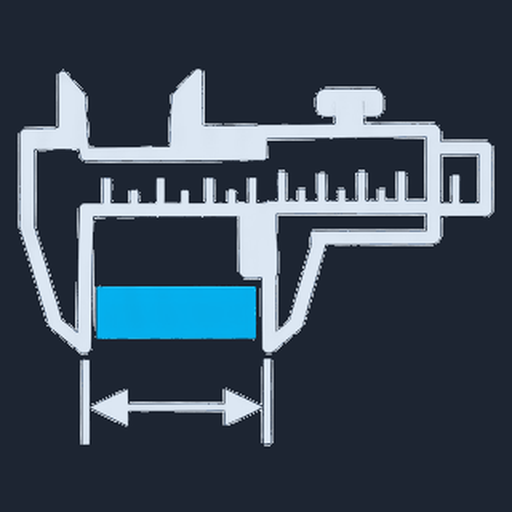
MeasureEdges, corners, distances, angles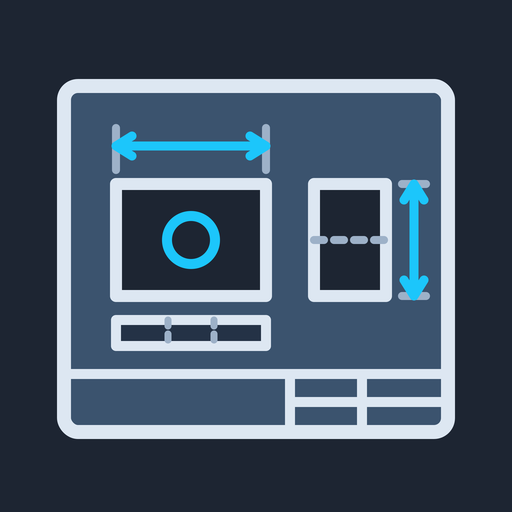
Technical DrawingDIN/ISO drawings → PDF, SVG, DXFInstallation & start
Requirements
- Python 3.10 (developed on Windows; Linux is supported through
run.sh) - PyQt5 5.15, numpy, PyOpenGL 3.1, qt-modern-style, ezdxf (DXF import), svgpathtools, manifold3d
- CadQuery / OCP for STEP import and export
- scipy, only for the optional Thermal add-on
Setting up with build.py
python build.py --venv # create .venv and install all dependencies
python build.py --exe # build a single-file executable with PyInstaller
python build.py --shortcut # create a desktop shortcut / launcher with icon
python build.py --platform linux --venvIf simplecad_thermal.py is in the same folder, build.py adds its extra dependencies and bundles it into the executable.
Starting
- Windows:
run.bat(activates.venvand runsSimpleCAD.py) - Linux:
./run.sh - Manually:
python SimpleCAD.py
User interface
- Menu bar: File, Edit, View, Help.
- Toolbars: the 1st row has Undo / Redo. The 2nd row has the modelling tools (New Sketch, Surface, Cut Surface, Extrude, Ring Extrusion, Angle Extrusion, Bridge, Chamfer, Fillet, Gear, Thread, Measure, Technical Drawing, Assembly, Thermal). In sketch mode the 2nd row switches to the sketch tools.
- Objects explorer (left dock): the object tree with visibility checkboxes.
- Properties panel: information about the selected object, plus colour, transparency, material and position.
- Right-hand panels: these depend on the tool, e.g. Sketch Status, the extrude settings, or Measurement.
- Status bar: hints for the current tool and measurement results.
3-D view navigation
| Action | Mouse |
|---|---|
| Rotate | Left mouse button drag |
| Pan | Middle mouse button drag |
| Zoom | Mouse wheel |
| Select hovered object | Left click without dragging |
| Deselect | Right click |
| Standard views | View → Isometric, Top (XY), Front (XZ), Right (YZ), Left (YZ); Fit All Ctrl+F |
The hovered axis, plane or solid face is highlighted (light green). Selected faces turn dark green. The origin axes are labelled x, y, z and can be hidden with the origin button.
Selecting in the 3-D view
| Click | Result |
|---|---|
| Click | Selects that surface only |
| Ctrl+click | Adds / removes surfaces |
| Shift+click | Selects the whole extrusion / imported part (same as clicking it in the explorer) |
| Ctrl+Shift+click | Adds / removes further whole objects (e.g. to export several) |
Selecting an extrusion highlights all non-cut extrusions connected to it through sketch links.
Objects explorer
- Sketches, extrusions, surfaces, cut surfaces, features, technical drawings and assemblies form a tree. Each child sits under the object it depends on. Imported models are root entries.
- The checkbox toggles the visibility of that one object only. The context menu has extra actions that also show or hide children.
- Shift/Ctrl+click selects several objects.
- Right-click opens the context menu: Edit, Rename (F2), Delete (Del), visibility actions, and for sketches Copy to face / surface….
- Double-click a technical drawing or assembly entry to open it.
Properties panel
- Colour and Transparency (0 % = solid) are set per object, without an edit mode. If several bodies are selected, the values apply to all of them (not to cut tools, sketches, assemblies or drawings).
- Material picks a density from a list (aluminium, steel, brass, copper, ABS, PLA, PET, FR-4, G10, CFK, woods …). The panel also shows the volume.
- Imported models have XYZ position and XYZ rotation fields. STEP models also have a Fixed checkbox.
Basic workflow
- New Sketch : click a base plane (XY / XZ / YZ), a flat face of a solid, or a Surface.
- Draw the profile with lines, rectangles, circles, arcs …
- Constrain it with dimensions and geometric constraints until DOF = 0 (the profile turns green).
- Accept the sketch (it needs a closed profile). You return to the 3-D view.
- Select the sketch and click Extrude. Set the direction and extent, optionally tick Remove material, then OK.
- Sketch on the faces of the new solid and repeat. Then add chamfers, fillets, threads and so on.
- Save the project (
.obj). Export to STEP / STL, or create a technical drawing.
Sketcher
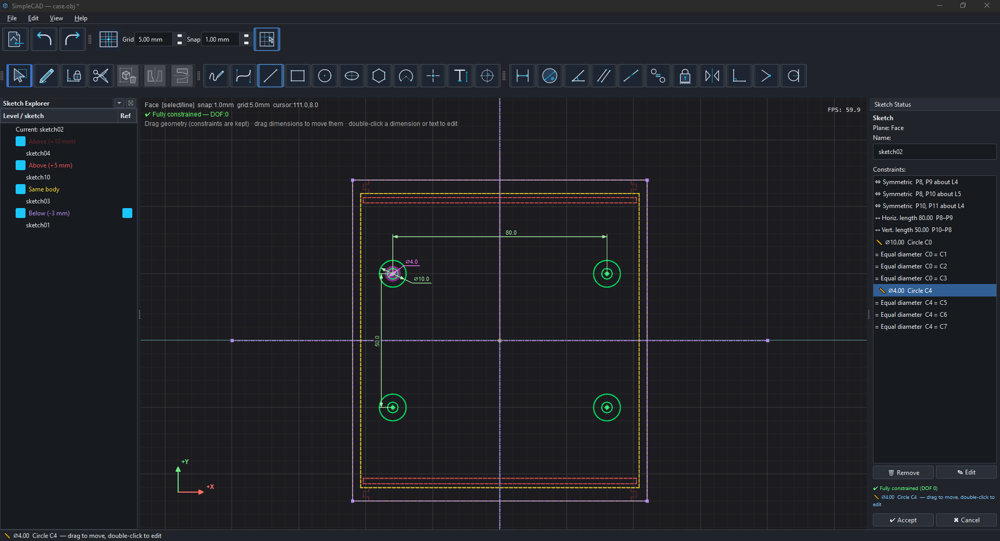
Starting a sketch
- Click New Sketch, then a base plane, a flat face of an extrusion, a planar face of an imported STEP model, or a Surface. Or select a Surface first and then click New Sketch. Esc or right-click cancels picking.
- The view switches to an orthographic top view of the plane. On side faces world +Z points up, on horizontal faces world +Y points up. An indicator at the bottom left shows the world axes.
- On a face, the face outline appears as fixed white reference geometry. It shows the face as it really is after cuts and fillets. It cannot be deleted or trimmed, but you can use it for constraints.
- While you sketch on an attached Surface, the supporting solid is shown as a shaded silhouette underneath. This is for display only.
Modes
| Mode | Purpose | |
|---|---|---|
| Select (default) | Rubber-band select, drag geometry or dimensions, double-click to edit, group / ungroup, mirror | |
| Draw | Create geometry with the draw tools | |
| Constrain | Add dimensions and geometric constraints | |
| Scissor | Trim a segment between neighbouring intersections (a circle becomes an arc) | |
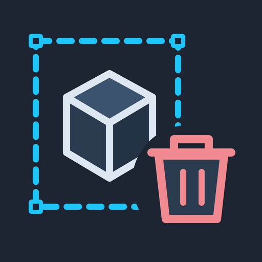 | Delete | Delete clicked geometry |
Drawing tools
| Tool | How to draw | |
|---|---|---|
| Line | Click the start and end points (chained) | |
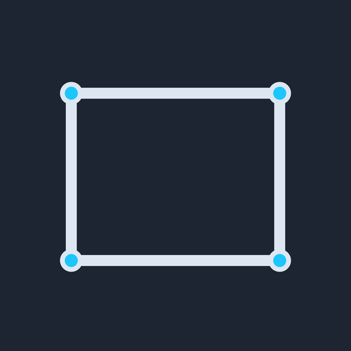 | Rectangle | Two opposite corners |
| Circle | Centre + radius | |
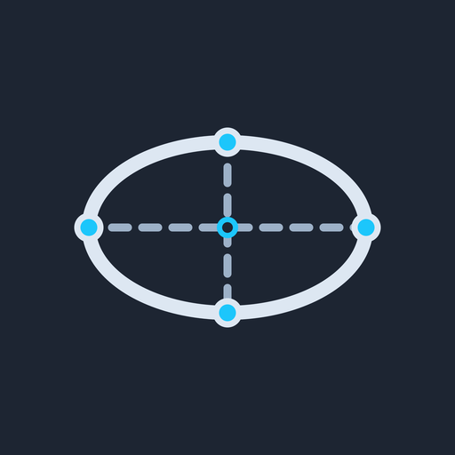 | Ellipse | Centre + two perpendicular diameters |
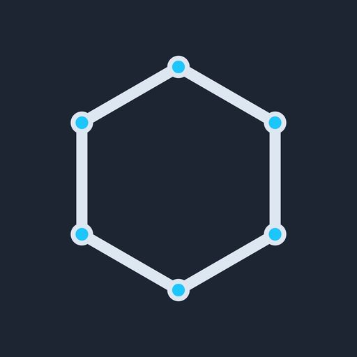 | Polygon | Regular polygon: centre + radius |
| Arc | Centre, start, end (counter-clockwise) | |
| Point | Single point, e.g. for construction | |
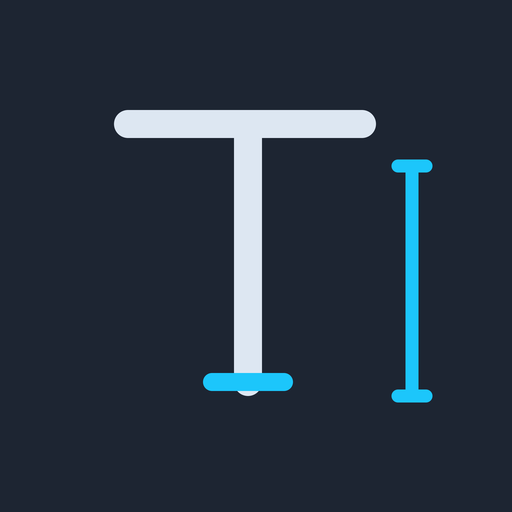 | Text | Click to place, then choose font, size, style and alignment. Text is rigid and extrudable. Drag it to move, drag a corner to scale, double-click to edit. |
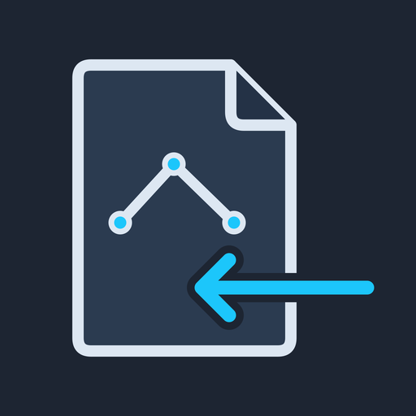 | SVG / DXF import | Imports paths, shapes and DXF entities into the sketch (convert complex SVG text to paths first) |
| Support geometry | Toggle: the tools then create blue dashed construction geometry. It can carry constraints but is never extruded. | |
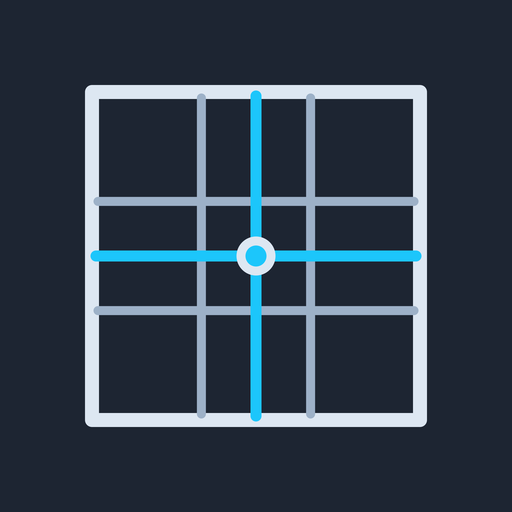 | Grid / Snap | Grid spacing (default 10 mm) and snap step (default 5 mm) |
Snapping: the cursor snaps to an existing point within 8 screen pixels, otherwise to the snap grid. It also snaps to line crossings and onto lines.
Editing geometry
- Right-click on geometry opens a context menu: switch support ↔ normal geometry, Cut, Copy, Paste, Delete. Ctrl+X / C / V work too, and paste lands at the cursor. The clipboard is shared between sketches.
- Mirror Horizontal / Vertical

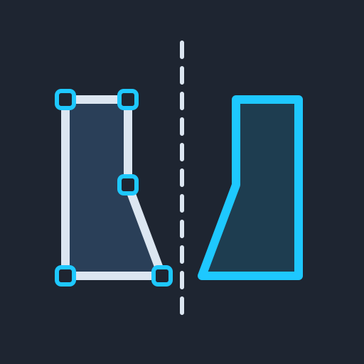
: select geometry, then click a sketch line or a sketch axis. The copies stay constrained to their originals. Text cannot be mirrored. - Del deletes the selected geometry and the selected constraints.
- Open parts of the profile (loose ends, branch points) blink red for 5 s and then stay marked red.
- Free (not fully constrained) geometry always wins a pick over dimensions and constrained geometry.
Groups & arrays
- Group (Select mode) turns the selection into one rigid body. It keeps its shape but can still move and rotate. Drag the group to move it by its centre, drag one of its points to rotate it. Ungroup dissolves it.
- Multiple
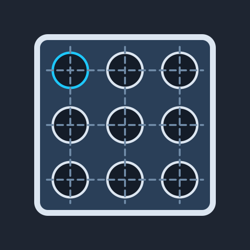
: select closed contour(s), then choose- Matrix: rows × columns with spacing, or
- Circular: number of copies, total angle, start angle (clockwise from the sketch +Y axis), radius, optional rotation.
Constraints
| Constraint | Notes | |
|---|---|---|
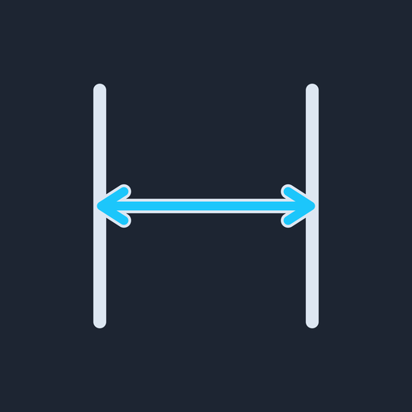 | Length / Distance | Between entities. Point-to-point distances can be direct, horizontal (ΔX) or vertical (ΔY). ΔX/ΔY = 0 aligns two points. |
| Diameter / Radius | Circle and arc size | |
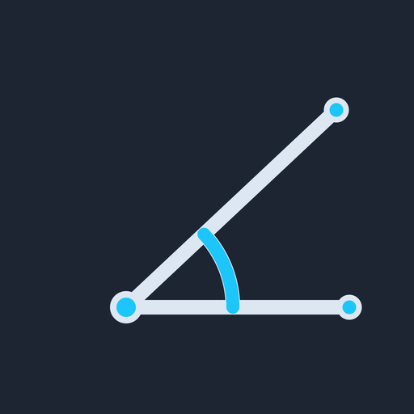 | Angle | Between two lines |
| Fix | Locks a point in place | |
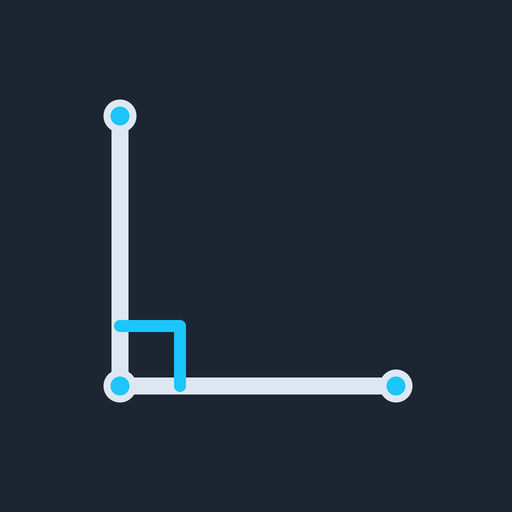 | Perpendicular | Two lines |
| Parallel | Two lines | |
| Collinear | Two lines on one straight line | |
| Equal | Line lengths or circle diameters | |
| Symmetric | About a centre line | |
| Tangential | Line + circle/arc, or two circles/arcs | |
| Point → Point / Line | Detects the target automatically: point → coincident, line → point on line, circle/arc → point on curve, axis → on axis, origin → fixed at (0,0) |
- The sketch X and Y axes act as fixed lines for distance, perpendicular, parallel, collinear, angle, tangential and symmetric. Click the axis where no geometry lies on it.
- The constraints are solved numerically. Dimensions drive the geometry, and dragging moves geometry only within its remaining freedom. Redundant or conflicting constraints are rejected.
- DOF (degrees of freedom) is shown in the Sketch Status panel. DOF 0 means fully constrained (green).
- The constraint list shows every constraint. Selecting one highlights it, and you can remove it or edit its value. Dimensions can be dragged to a better position, and double-clicked to edit.
- In support-geometry mode, Length and Angle only measure (the value is shown in brackets).
References & Sketch Explorer
The Sketch Explorer lists other sketches that are parallel to the active one, grouped by their signed distance:
- Sketches on the same level are yellow and read-only. Levels below are violet (darker = deeper), levels above are red.
- Tick Reference on a lower level (or the same level) to project its geometry as fixed references. You can then snap to it and constrain to it. The direct supporting sketch is enabled automatically.
- Drawing onto a reference creates a removable coincident or point-on-line constraint. The new geometry is not merged into the reference.
- The Face outline row shows or hides the face outline and switches its use as a reference.
- Cut extrusions (remove-material extrusions) are projected onto every sketch, clipped to the bodies they cut, and shown grey hatched with a dashed outline. A hole running inside a body therefore shows on its other faces too. They are display only, not references. The Cut extrusions row hides or shows them (remembered for the session). The cut made from the sketch being edited is left out.
- Faces of other visible solids that lie in the same plane as a face sketch are shown grey with a dashed outline. They are display only as well.
- The Cut extrusions row shows or hides the remove-material extrusions, projected onto the sketch and clipped to the bodies they cut (grey hatched, dashed outline). A hole running inside a body therefore shows on its other faces. They are display only: you cannot snap or constrain to them. The cut of the sketch you are editing is left out.
- Hiding a level or unticking Reference does not remove existing constraints.
Accepting / cancelling
- Accept (Sketch Status panel) needs a closed profile. Text outlines count as closed profiles.
- Esc with nothing pending cancels the sketch (it asks first if the sketch has geometry).
- Right-click never closes the sketch. It deselects or aborts the current step.
- Ctrl+Z / Ctrl+Y undo / redo every sketch step.
3-D features
Surface (work plane)
Creates a work plane relative to the origin, another Surface or a solid face. On planar faces it aligns directly. Curved faces get a tangent plane: spheres by azimuth / elevation, cylinders by angle / axial position, other faces at their highest point. You can set local XYZ offsets, XYZ rotations and the display size. Hiding a Surface hides only the plane, not the sketches built on it.
Cut Surface
Select an extrusion and click Cut Surface. Place the grey plane with the move / rotate fields or drag the coloured arrows. The side the orange arrow points to is removed (Keep the other side swaps this), and the cut face is drawn hatched. The cut applies to the body and everything built on it. It is used by STEP/STL export and the assembly. The explorer checkbox switches the cut on or off. You can stack several Cut Surfaces.
Extrusion
- Direction: one direction, opposite, or symmetric. A negative height extrudes the opposite way.
- Extent: distance, through all touching bodies (cuts), or to next surface (next extrusion, sketch region or coordinate plane; straight only). With to next surface you can click a face to make it the target. Auto forgets the chosen face.
- Remove material
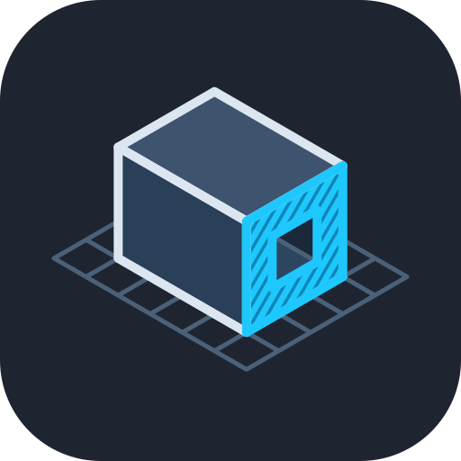
: the extrusion is drawn as a translucent red tool body and subtracted from every earlier body it passes through. - Face extrusion: select flat faces of a body and click Extrude, with no sketch. The extrusion is rebuilt automatically whenever the body changes.
Ring Extrusion
Revolves the profile around an axis (sketch or world axis). The ring radius can be measured to the profile centre, outer edge or inner edge. The angle is positive counter-clockwise. With Helical mode the profile advances along the axis while it revolves (set the axial rise), e.g. for springs or coarse threads. Material can be added or removed.
Angle Extrusion (draft)
Creates angled shapes. Pick the pivot point on the extrusion and enter the angle. Positive angles draft toward the pivot, negative angles away from it.
Bridge / Merge
Click Bridge, then a face on each of two bodies. If the faces of two extrusions do not face each other, Bridge searches for a suitable pair. Curved targets such as cylinders work as well. The solids and the bridge are fused into one new solid under the first selected solid. The original solids are kept but hidden.
Chamfer &
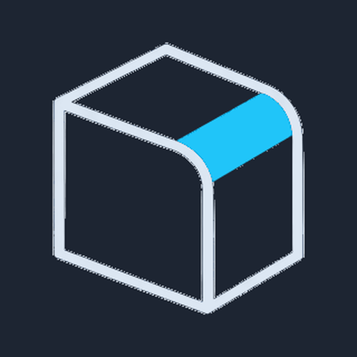
FilletClick the edges in the 3-D view. Selected edges continue automatically along tangent chains. Chamfer modes: Equal length, Two lengths, Length + angle. Flip measures from the other face, and Outside adds material instead of cutting it. A fillet only needs a radius. Tight corners are handled without folding over.
Gear generator
The involute gear generator creates the gear with an optional matching counterpart (ratio or mate diameter):
| Type | Specific parameters |
|---|---|
| Spur gear | Teeth, module / outside diameter, width, bore |
| Ring gear (internal) | Rim thickness |
| Planetary | Sun / planet / ring diameters, planet count, fixed member, bores |
| Bevel gear | Cone angle derived from the mate |
| Helical / Herringbone | Helix angle |
| Rack | Rack length |
| Timing pulley | Belt profile, flanges, hub |
| Chain sprocket | Chain standard / pitch |
| Ratchet wheel | Tooth depth, locking face undercut |
| Geneva drive | Slots, centre distance, pin diameter, crank plate |
| Worm + worm wheel | Worm starts, worm pitch diameter |
Thread generator
Select a cylindrical surface. Then choose a standard size (metric / imperial) or Custom (turns per mm, thread depth). Choose External (screw) or Internal (nut), a fit grade (6 or 7, radial clearance), and the length (a distance or the full length). The profile is the ISO / Unified 60° profile.
Measure
Click any number of edges and corners. Results appear in the status bar and in the Measurement panel: edge lengths, the relations between edges (connected, same face, parallel, perpendicular, with 3-D and 2-D XY values), and between corners the 3-D distance, ΔX / ΔY / ΔZ and angles. Measured items are highlighted in the inverted body colour. Right-click an item to remove it. Right-click elsewhere or press Esc to clear everything.
Managing objects
- Edit
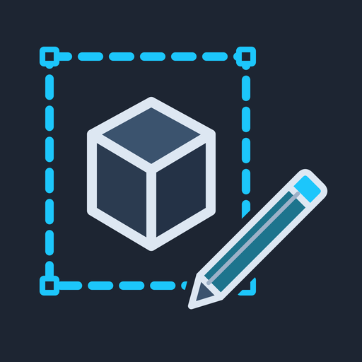
: a sketch reopens in drawing mode, and an extrusion reopens its settings. Dependent objects are rebuilt. - Rename (F2) and Delete (Del). Delete asks for confirmation and also removes dependent objects.
- Copy to face / surface… (sketch context menu): click a target face, Surface or base plane. A new sketch opens there with the copied geometry and its internal constraints.
- Undo / Redo: every project change (accepted sketch, extrusion, delete, rename, visibility, colour, edits) can be undone and redone.
- Show All Objects (View menu) makes everything visible again.
Import & export
Import (File → Import)
- STEP (via CadQuery/OCP) and STL models are centred at the origin. You can move and rotate them with the XYZ fields in the properties panel.
- New Sketch can use a planar STEP face. Dependent sketches fix the model's position automatically until the last dependency is deleted.
Export (File → Export, Ctrl+E)
Select the extrusion(s) first, in the explorer or with Shift+click in the 3-D view. The export writes the selected solids and everything built on them as STEP or STL. Cut bodies and Cut Surfaces are included.
Technical Drawing
Open it with File → Technical Drawing. It starts with the selected solid, or with an empty sheet if nothing is selected. The editor is a separate window with File / Edit / Sheet / View / Tools menus, two toolbars, and dock panels Views, Dimensions and Sheet.
Sheets & standards
- Formats A2, A3, A4, A5, in landscape or portrait, with the frame, reference grid and title block of DIN EN ISO 5457. Auto scale fits the views to the sheet.
- First-angle projection (DIN ISO 128-30) by default. Third-angle can be chosen on the Sheet tab.
- Scales from ISO 5455. Dimension text follows DIN 406-11. General tolerances follow ISO 2768 (e.g. ISO 2768-mK).
- A drawing can have multiple sheets (tabs; Add, Duplicate, Rename, Delete, drag to reorder). Each sheet has its own model, format, views, dimensions, sections, title and drawing number.
Views
- Place the top, front, left, right, isometric and section views manually. Views snap to the grid and align with each other.
- Rotate the model in XYZ quarter turns. Hidden lines (dashed blue) can be switched off per view.
- Sections A-A, B-B …: add, rotate by 90°, or remove them in the Views panel, or click a view with the Cut tool. Drag a cutting line to move it, and right-click it to rotate or delete it.
- Threads are drawn following DIN ISO 6410-1. Centre lines are added for holes and bosses.
- The isometric view is shaded only.
- Import SVG / DXF (Ctrl+Shift+I) places a 2-D graphic on the sheet. It can be dragged, scaled and dimensioned.
Dimensions
- A length always takes two picks: point → point, point ↔ line (perpendicular distance), or two parallel lines. Points snap first.
- Angle, radius and diameter dimensions are available too. Centre lines can be used as references.
- Drag the number to slide it and to move the dimension line sideways. Select a dimension on the sheet or in the list, and press Del to remove it.
Navigation & finishing
Wheel zooms, the middle mouse button pans, right-click cancels or deselects, and Home fits the sheet. Undo / Redo cover every change while the editor is open. Finish Drawing (Ctrl+Enter) stores the drawing as a child of the extrusion.
Export
- PDF: every sheet as one page.
- SVG: one file per sheet (
name.svg,name-2.svg…). - DXF: AutoCAD R12, mm, layers OUTLINE / THIN / HIDDEN / CENTER / FRAME / TEXT. The isometric view is exported as edges.
Exports are always black on a white sheet.
Assembly
The Assembly window has its own 3-D view, a component explorer and an Alignments panel.
- Import: STEP / STL / OBJ files (a SimpleCAD
.objproject contributes each of its parent solids), or parts of the open project. Parts are snapshots. They cannot be edited here, only placed. - Placing: arrows move along X / Y / Z, and rings rotate (snapping every 15°, hold Ctrl for free rotation, Shift for whole mm). The XYZ fields work too.
- Align
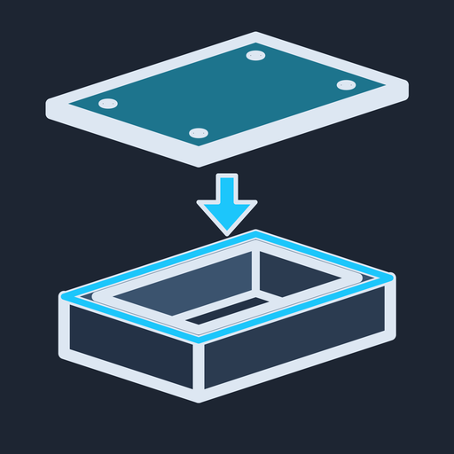
: click a surface, corner, edge midpoint or hole rim on the part to move, then the same on another part (Alt+click on a surface = object centre). Two surfaces become parallel and coplanar, two points coincide. Alignments follow the target. Apply re-establishes them, and unticking releases them. - Update Selected / Update All : re-reads parts whose source changed (marked outdated). Placement, colour and transparency are kept.
- Cut Surface: cuts the whole assembly at a movable plane. Apply makes the cut permanent, optionally splitting each object into part 1 / part 2.
- Measure is available here as well.
- Export: the ticked parts as one STEP or STL file.
- Saving: assemblies of project parts are stored inside the project as an "Assembly N" entry. Save As writes a
.asbyfile.
Thermal add-on
simplecad_thermal.py is next to SimpleCAD.py (or bundled into the executable). It needs scipy. Without the file, the Thermal toolbar button and menu entries are not shown. The installed add-on version (currently 2.2) is listed under Help → About.The Thermal add-on predicts the temperatures of parts and assemblies that produce heat, e.g. a power transistor on a heatsink, a PCB in a housing, or a 3-D-printed enclosure with an LED driver inside. You can answer questions like:
- How hot does the part get after a long time (steady state)?
- How quickly does it heat up, and does a duty cycle or a thermostat keep it below a limit (transient)?
- Does natural convection suffice, or is a fan needed? Where should vents go (airflow)?
- How much does a water-cooled cold plate warm the coolant, and what flow does the pump deliver (liquid cooling)?
- How hot do the junctions of the power parts on a PCB get (KiCad / Gerber import)?
- Which material, power, fan or thermal pad is good enough (parameter sweep)?
Open it with the Thermal toolbar button (right of Assembly) or File / Edit → Thermal…. Units in the window are mm, W and °C; the solvers work internally in SI units.
Window layout
The Thermal window is a separate window like the Assembly window. It is divided into three areas. The two side panels can be collapsed with the arrow in their title.
| Area | Content |
|---|---|
| Study (left) | The study explorer (parts, heat sources, fans / vents, face conditions, contacts, probes; ☑ = visible) and below it the properties of the selected item. |
| 3-D view (middle) | The model, the temperature legend on the right, and for transient results a time slider with a play button at the bottom. |
| Simulation (right) | Section-view controls (while active), the solver and its settings, the environment, the mesh, then the results tables, the temperature-over-time plot, the colour range and the solver messages. |
| Bottom bar | Status text, progress bar, Cancel (while a run is going) and Close. |
Toolbar
| Button | Function | |
|---|---|---|
| New / Open / Save / Save as | Thermal study files (.thml) | |
| Import ▾ | STEP file, STL file, OBJ file / SimpleCAD project, assembly file (.asby), the assembly of the open project, parts of the open project, or a PCB (KiCad board or Gerber files) | |
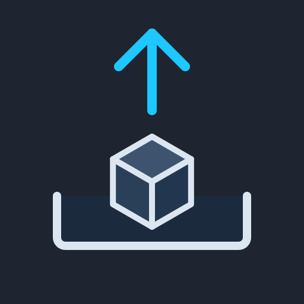 | Export ▾ | PDF report, results table (CSV), values over time (CSV), result for ParaView (VTU), image of the view (PNG) |
| Undo / Redo | Every change of the study | |
| Probe | Click on a part to place a temperature probe (Esc ends) | |
| Remove | Removes the selected part or item (Del in the explorer) | |
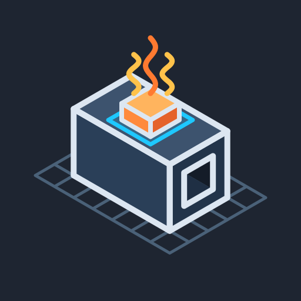 | Heat Source ▾ | Block…, Cylinder…, Extrusion on a face…, Component package (junction model)…, Power of the selected body… |
| Face Condition ▾ | Fixed temperature, Heat flux, Convection, Insulated, Coolant channel, Liquid bath | |
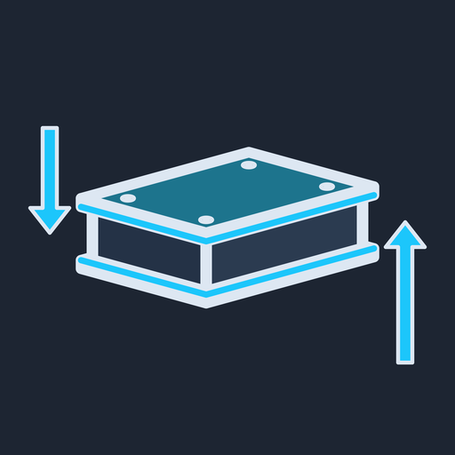 | Contacts ▾ | Detect touching parts, Contact between two bodies… |
| Airflow ▾ | Fan…, Vent / opening… (used by the Airflow + heat solver) | |
| Materials | Opens the material library | |
| Start Simulation (F5) | Meshes the visible bodies and solves | |
| Parameter sweep | Runs the study for several values of one parameter | |
| Show temperatures | Switches between the temperature map and the normal view | |
| Section view | Cuts the view at a movable plane to look inside | |
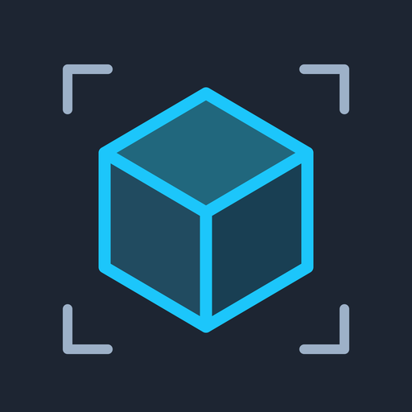 | Views, origin, Show all | Standard camera views, origin axes on/off, show and fit all parts |
| Update selected / all | Re-read changed sources. Placement, materials chosen here and powers are kept. |
The menu bar (File, Edit, View, Simulation) contains the same actions. The Simulation menu also has Sweep results and Cancel simulation, and View has Streamlines for airflow results.
Step by step
- Import the parts (Import ▾). Parts are snapshots like in the Assembly; a part whose source changed is marked and can be updated.
- Place them with the move arrows / rotation rings in the view or the Position / Rotation fields in the properties (position = centre of the part).
- Assign a material to every body. Bodies without a material cannot be simulated.
- Add heat: give a body a power, or place a block / cylinder heat source, or extrude one from a face.
- Optional: face conditions, contacts (thermal paste, pads), fans and vents, coolant channels and liquid baths, probes, thermostats, power profiles. For electronics, import the PCB and place the power components as packages.
- Choose the solver and analysis in the Simulation panel and set the environment (ambient temperature, convection, radiation) and the mesh.
- Start Simulation (F5). Progress is shown at the bottom; Cancel stops the run.
- Evaluate: temperature map, results table, probes, section view, plot, messages. Then export.
Parts & bodies
Selecting a part shows its source, state (ok / outdated / missing), position and rotation. Each part consists of one or more bodies, and each body has:
- Material: taken from the source object if it has one in SimpleCAD (it then follows Update), or chosen here (then kept). A summary of the material properties is shown below the box.
- Power (W): heat produced inside the body, spread evenly over its volume.
- Profile and Thermostat for the power (see below).
- Own surface emissivity: overrides the material value, e.g. ε = 0.8 for anodised or painted metal.
The right-click menu in the explorer has Update, Set power…, Rename… and Remove; on face conditions also Pick faces.
Heat sources
| Type | Settings |
|---|---|
| Block | Name, size X / Y / Z (default 10 × 10 × 2 mm), centre, power (default 1 W), material. With a part selected, On top of <part> places it centred on the part's top. |
| Cylinder | Diameter (default 8 mm), height (12 mm), axis Z / X / Y; otherwise as Block. |
| Extrusion on a face | Click a face of a part, then choose a rectangle (U × V) or circle footprint, its offset from the face centre (U follows X where possible, else Y; V is at right angles), the height, power and material. Out of the face creates a component sitting on the face; Into the body creates a heat zone inside the body in the body's own material (e.g. a die area inside a package). |
| Component package | An electronic package with a junction model (see PCB import & packages). It is placed on the selected board, or at the origin. |
| Power of a body | Any imported body can produce heat itself; no extra geometry needed. |
Heat sources are shown in orange. Where a placed heat source overlaps a body, the heat source wins. The size of a placed block or cylinder can be changed later in its properties.
Power profiles
Profiles define how the power changes over time. They act in transient runs; a steady-state run uses an equivalent constant power.
| Profile | Parameters | Steady state uses |
|---|---|---|
| Constant | — | the power |
| On / off cycle | Period (s), duty (% on, at the start of each cycle) | the mean power (power × duty) |
| Ramp up | Ramp time: linear rise from 0 to the full power | the full power |
| Table (CSV) | Import a file with two columns: time in s, power in W. Separators: comma, semicolon (then decimal commas are allowed), tab or spaces. Header and comment lines are skipped; values are interpolated linearly. | the last table value |
The energy of a cycle is integrated exactly, even when the cycle is shorter than a time step. If a cycle switches much faster than the time step, a warning suggests more time steps.
Thermostats
A thermostat (on a body power or a heat-flux condition) switches the power off at setpoint + ½ hysteresis and on again at setpoint − ½ hysteresis. Defaults: setpoint 60 °C, hysteresis 2 K.
- Sensor: the hottest point of the body, the mean of the body, or a probe (place one first with the Probe tool).
- In a transient run the power switches on and off over time.
- In a steady-state run the result shows the share of the power needed to hold the setpoint.
- If the thermostat switches at almost every time step, a warning recommends more time steps or a larger hysteresis.
Face conditions
Choose a condition type, then click faces in the view (Pick faces in the view). Click a chosen face again to remove it; Esc ends picking. Faces without a condition exchange heat with the environment as set in the Simulation panel. A condition can be deactivated with its Active checkbox. Faces stay assigned when a part is updated, as long as they can be recognised.
| Condition | Colour | Settings | Typical use |
|---|---|---|---|
| Fixed temperature | blue | Temperature | Part clamped to a cold plate, water-cooled surface |
| Heat flux | magenta | Total power (W) or flux density (W/m²), optional profile and thermostat | Heating foil, a known load entering a surface (the faces still exchange heat with the air) |
| Convection | cyan | h (W/m²K), air at ambient or at its own temperature | Fan-cooled side (h ≈ 20–100 W/m²K). Radiation stays as set for the environment. |
| Insulated | grey | — | Face against insulation or a poorly conducting mounting surface (no convection, no radiation) |
| Coolant channel | light blue | See Liquid cooling | Water-cooled cold plate, drilled channel, pipe |
| Liquid bath | violet-blue | See Liquid cooling | Heater in a water tank, part immersed in oil |
If a face is part of several conditions, the last one counts.
Contacts
Touching bodies share grid nodes, so their contact is bonded (perfect heat transfer). A contact item between two bodies adds a thermal resistance where they touch. Use Detect touching parts to find all pairs automatically, or Contact between two bodies… to add one.
| Type | Input | Notes |
|---|---|---|
| Bonded | — | Same as no contact item |
| Contact resistance | R in K·cm²/W (1 K·cm²/W = 10⁻⁴ m²K/W) | Dry metal-on-metal joints ≈ 1–10 K·cm²/W, with thermal paste ≈ 0.1–0.5 |
| Interface layer | Thickness and conductivity k, or a preset | A thin layer that is not modelled as its own part |
Interface layer presets (typical datasheet values):
| Preset | Thickness | k (W/m·K) |
|---|---|---|
| Thermal paste | 0.05 mm | 1.0 |
| Thermal pad | 0.5 mm | 3.0 |
| Soft silicone gap filler | 1.0 mm | 1.5 |
| Silicone insulator (Sil-Pad type) | 0.23 mm | 0.9 |
| Polyimide film (Kapton) | 0.05 mm | 0.12 |
| Mica washer | 0.1 mm | 0.6 |
| Air gap | 0.1 mm | 0.026 |
If the two bodies of a contact do not actually touch, the messages show a warning.
Fans & vents
Fans and vents are only used by the Airflow + heat (CHT) solver. They are not solids; they open the domain walls or housing walls they overlap.
| Item | Settings |
|---|---|
| Fan | Round (Ø) or rectangular (W × H), thickness, blowing direction (±X / ±Y / ±Z). Flow either as a fixed volume flow (m³/h, default 10) or a fan curve: free-blowing flow and stall pressure, or a table of pressure over flow. With a part selected, Next to <part>, blowing onto it places the fan upstream of the part. |
| Vent / opening | Shape, size, direction and the free area in % (default 50 %). The pressure loss is computed from the free area (perforated plate / grille, Idelchik). In the face of <part> places it in the wall the air leaves through. |
A fan that is not aligned with a grid axis acts along the nearest axis. A device without a free air face has no effect; both cases are reported in the messages.
Liquid cooling
Liquids are added as two face conditions in Face Condition ▾: Coolant channel and Liquid bath. As with the other conditions, you pick the faces in the view that touch the liquid.
Liquids
Properties are tabulated over temperature (density, specific heat, conductivity, viscosity) at about 1 bar and interpolated. The glycol mixtures and oils are typical values; real products vary.
| Liquid | Range in table | Warning above | Notes |
|---|---|---|---|
| Water (default) | 0 – 100 °C | 100 °C (boiling not modelled) | IAPWS data; freezes at 0 °C |
| Water–glycol 30 % | −10 – 100 °C | ≈ 104 °C | Ethylene glycol by volume, frost protection to about −15 °C |
| Water–glycol 50 % | −20 – 100 °C | ≈ 107 °C | Frost protection to about −37 °C |
| Transformer oil | −20 – 100 °C | 105 °C (ages quickly) | Mineral insulating oil (IEC 60296); very viscous in the cold; no evaporation |
| Hydraulic oil (ISO VG 32) | 0 – 100 °C | 90 °C (ages quickly) | 32 mm²/s at 40 °C; no evaporation |
If a wetted face gets hotter than the liquid's limit, the messages show a warning.
Coolant channel
Pick the inner faces of a pipe, drilled channel or cold-plate passage. SimpleCAD derives the channel's length, hydraulic diameter and cross-section from these faces, also for bent passages. The liquid enters at the lower end, takes up heat from the wall and warms up along the channel.
| Setting | Default | Meaning |
|---|---|---|
| Liquid | Water | One of the liquids above |
| Model | Correlations (fast) | Correlations: heat transfer from pipe-flow formulas (laminar with entry region, transitional, turbulent); works with both solvers. Liquid flow solved: in Airflow mode the liquid itself is simulated (needs about 4 or more cells across the channel, and takes several minutes). |
| Flow | Fixed flow rate, 1 L/min | Or a pump curve: free flow (default 4 L/min) and shut-off pressure (default 20 kPa). The operating point is where the pump curve meets the channel's pressure drop (Darcy–Weisbach). |
| Inlet | own temperature, 25 °C | Either the liquid's own inlet temperature, or the outlet of another coolant channel (channels in series). |
| Liquid enters at the other end | off | Reverses the flow direction |
| Channel | — | Shows the derived geometry (length, hydraulic diameter) |
The messages list each channel with its flow regime, Reynolds and Nusselt numbers, h, inlet → outlet temperature, the heat taken up and the pressure drop. With a pump curve the operating point is reported. If the pump cannot overcome the channel, there is no flow and a warning.
Liquid bath
Pick the faces that touch the liquid, e.g. the inside of the container and the heater.
| Volume | Behaviour |
|---|---|
| Fills the container (default) | The liquid fills the container up to the fill level (default: the top of the picked faces, or a Z value) and is well mixed (one temperature). Natural convection acts on the wetted faces; the open surface loses heat by convection, radiation and, if ticked, evaporation. In transient runs the liquid starts at the run's start temperature, or at its own value. |
| Large volume, fixed temperature | The faces see liquid at a fixed temperature (Liquid at), e.g. a part in a large tank. |
In Airflow mode with Liquid flow solved, the bath is simulated as liquid with buoyancy from the density table, instead of being well mixed.
Liquid results
The PDF report and the CSV export contain a table of all liquid items: kind, liquid, flow, inlet and outlet (or bath) temperature, heat taken up, h and pressure drop. The Parameter sweep can vary the flow rate and the inlet temperature of a coolant channel.
PCB import & component packages
Import ▾ → PCB (KiCad board or Gerber files)… turns a printed circuit board into a thermal body whose conductivity follows the real copper.
Sources
- KiCad board files (
.kicad_pcb, KiCad 5 … 10). The layer stack, board thickness, outline, copper, plated holes and the footprints are read. - Gerber files (RS-274X) with Excellon drill files, either as a folder, a single Gerber file (its folder is read), or a Gerber job (
.gbrjob). Layers are recognised from the file function attribute or from the file name (.gtl / .gbl / .g1… / .gko / .gm1,F_Cu / B_Cu / In1_Cu / Edge_Cuts…). Gerber files contain no components, so place power parts by hand with Component package.
After loading, the dialog shows what was found (copper layers, outline, plated holes, footprints). Without an outline, the box around the copper is used.
Board settings
| Setting | Default | Meaning |
|---|---|---|
| Core | FR-4 | FR-4 (0.81 W/m·K in-plane, 0.29 through) or Aluminium core (IMS) with its dielectric thickness (0.1 mm) and conductivity (2 W/m·K) |
| Hole plating | 25 µm | Copper in the walls of vias and through-hole pads |
| Other parts | 0 W | Heat of all components that are not placed, spread evenly over the board |
| Layer stack | from the file | Thickness of every copper layer (18 µm = ½ oz, 35 µm = 1 oz, 70 µm = 2 oz, 105 µm = 3 oz) and every dielectric in between |
The board becomes one body (the outline extruded to the board thickness, shown green). Each copper layer is rasterised, and every cell gets its own conductivity from the copper share of each layer, the resin in between and the copper barrels of the plated holes. In-plane heat spreading through copper planes and heat transport through via arrays are therefore included without modelling the copper as separate parts. The board's properties show a summary, e.g. "2 copper layers (35 / 35 µm), FR-4, 1.6 mm, 37 × 25 mm, 64 vias".
Components to place
The footprint table lists every KiCad footprint with reference, value and footprint name. Select by reference ticks all parts whose reference starts with the given letters (default Q U D L: transistors, ICs, diodes, inductors). For each ticked part:
- Package is guessed from the footprint name; you can change it.
- Enter the Power in W.
- θ top, θ board and Tj max are filled in with typical values. Datasheet values are better.
The parts are placed at their footprint positions and rotations, on the top or bottom side.
Junction model
Every package is a block of Mould compound (k = 0.8 W/m·K) with a two-resistor model: the power enters at the junction, which is connected to the package top by θ top (θJC top) and to the board by θ board (θJB, or θJC of an exposed pad or tab). The results give the junction temperature of every package, together with the package top and board temperatures. If a junction exceeds Tj max, the messages show a warning. Packages can be edited later in the properties (θ to top, θ to board, Tj max).
A package can also be placed by hand with Heat Source ▾ → Component package (junction model)… (name, package, power, θ values, Tj max, top or bottom side). It is placed on the selected board, or at the origin, and can be moved with the arrows.
| Package | Size L × W × H (mm) | θ top (K/W) | θ board (K/W) | Tj max (°C) |
|---|---|---|---|---|
| SOT-23 | 2.9 × 1.3 × 1.0 | 120 | 80 | 150 |
| SOT-23-6 | 2.9 × 1.6 × 1.1 | 100 | 60 | 150 |
| SOT-223 | 6.5 × 3.5 × 1.6 | 30 | 15 | 150 |
| SOT-89 | 4.5 × 2.5 × 1.5 | 40 | 20 | 150 |
| SOD-123 | 2.7 × 1.6 × 1.1 | 150 | 100 | 150 |
| SMA (DO-214AC) | 4.3 × 2.6 × 2.1 | 60 | 25 | 150 |
| SMB (DO-214AA) | 4.6 × 3.6 × 2.2 | 40 | 18 | 150 |
| SOIC-8 | 4.9 × 3.9 × 1.5 | 45 | 60 | 150 |
| SOIC-8 EP | 4.9 × 3.9 × 1.5 | 40 | 10 | 150 |
| MSOP-8 | 3.0 × 3.0 × 1.0 | 60 | 80 | 150 |
| TSSOP-20 EP | 6.5 × 4.4 × 1.2 | 30 | 8 | 150 |
| WSON / DFN 2×2 EP | 2.0 × 2.0 × 0.8 | 70 | 15 | 150 |
| QFN 3×3 / 4×4 / 5×5 EP | 3 / 4 / 5 square × 0.9 | 40 / 25 / 20 | 6 / 4 / 3 | 150 |
| DPAK (TO-252) | 6.6 × 6.1 × 2.3 | 25 | 2 | 175 |
| D2PAK (TO-263) | 10.2 × 9.2 × 4.5 | 15 | 1 | 175 |
| TO-220 (lying flat) | 10.2 × 15.0 × 4.5 | 30 | 1.5 | 175 |
| TO-247 (lying flat) | 16.0 × 21.0 × 5.0 | 25 | 0.6 | 175 |
| Power LED 3535 | 3.5 × 3.5 × 2.0 | 60 | 8 | 135 |
| LED 5050 | 5.0 × 5.0 × 1.6 | 60 | 12 | 125 |
| LED 1206 | 3.2 × 1.6 × 1.1 | 300 | 150 | 125 |
| Resistor 0603 / 0805 / 1206 | 1.6–3.2 × 0.8–1.6 × ≈0.5 | 600 / 450 / 300 | 250 / 180 / 120 | 155 |
| Resistor / shunt 2512 | 6.4 × 3.2 × 0.6 | 150 | 30 | 155 |
| Inductor 1812 / 6×6 / 10×10 | 4.5–10 square-ish × 3–4.5 | 100 / 60 / 40 | 50 / 30 / 20 | 125 |
| Custom block | size of the footprint's pads × 1.5 | 50 | 20 | 150 |
Materials
The Materials dialog lists the built-in materials (read only, shown in grey) and your own. Each of your materials shows where it is stored ("library" or, in italics, "this study") and how many bodies use it. Use New, Duplicate (e.g. copy a built-in one and change it) and Delete. Your materials are stored in thermal_materials.json next to SimpleCAD and copied into every study that uses them, so a study file still works on another computer.
Material properties: k (W/m·K), optional in-plane k for laminates, cp (J/kg·K), density (kg/m³), emissivity, optional max. service temperature, note, and optional tables k(T) and cp(T) (cp(T) only matters in transient runs). The plain k and cp refer to 20 °C.
Built-in materials (typical handbook values at about 20 °C; actual grades vary):
| Material | k (W/m·K) | cp (J/kg·K) | Density (kg/m³) | ε | Max. °C | Note |
|---|---|---|---|---|---|---|
| Aluminium | 167 | 896 | 2700 | 0.09 | — | 6061 / 6082, bare surface |
| Aluminium Black Anodized | 200 | 900 | 2700 | 0.85 | — | Heatsink alloy 6063; the coating greatly increases radiation |
| Copper | 398 | 385 | 8960 | 0.05 | — | Oxidised surface ε ≈ 0.6 |
| Tin | 66.8 | 228 | 7310 | 0.05 | 200 | Melts at 232 °C |
| Brass | 109 | 380 | 8500 | 0.10 | — | CuZn37 |
| Bronze | 50 | 380 | 8800 | 0.10 | — | CuSn8 |
| Steel | 50 | 490 | 7850 | 0.30 | — | Carbon steel; stainless only ≈ 16 |
| ABS | 0.17 | 1400 | 1040 | 0.92 | 80 | Softens near 95 °C |
| PLA | 0.13 | 1800 | 1240 | 0.92 | 50 | Glass transition ≈ 60 °C |
| PET | 0.20 | 1200 | 1380 | 0.90 | 70 | PET / PETG |
| Micarta | 0.30 | 1400 | 1350 | 0.90 | 120 | Phenolic laminate |
| G10 | 0.29 / 0.81 in-plane | 1100 | 1850 | 0.90 | 140 | Glass-epoxy laminate |
| FR-4 | 0.29 / 0.81 in-plane | 1100 | 1850 | 0.90 | 130 | PCB laminate without copper |
| GFK | 0.30 | 1000 | 1900 | 0.90 | 120 | Glass-fibre reinforced plastic |
| CFK | 0.80 / 5.0 in-plane | 1000 | 1600 | 0.85 | 120 | Carbon-fibre laminate |
| Wood (Oak / Pine / Beech / Birch / Walnut) | 0.12 – 0.17 | 1900 – 2300 | 500 – 750 | 0.90 | 100 | Across the grain |
| Mould compound | 0.8 | 880 | — | 0.90 | — | Body of component packages |
Laminates (G10, FR-4, CFK) are orthotropic: the low through-plane value applies along the thinnest extent of the body. If a body exceeds its material's max. service temperature, the messages show a warning.
Simulation settings
Solver & analysis
| Setting | Options / default | Meaning |
|---|---|---|
| Solver | Conduction (FEM) / Airflow + heat (CHT) | Conduction: heat conduction in the bodies, air cooling and radiation act on their surfaces (fast, seconds). Airflow: the air around and inside the parts is simulated too, with buoyancy, fans and vents (minutes). |
| Analysis | Steady state / Transient | Final temperatures after a long time, or how the temperatures develop after switching on. |
| Duration | 600 s (shown in s / min / h) | Transient: simulated time after switching on |
| Time steps | 100 (1 – 10 000) | More steps = more accurate and slower. Up to 100 time points are kept for the time slider. |
| Start temperature | Ambient, or own value | Transient: temperature of all bodies at t = 0 |
For transient runs the panel shows an estimated thermal time constant τ. After about 5 τ the temperatures are within about 1 % of their final values, so a duration of 5 τ is a good choice to see the whole warm-up.
Environment
| Setting | Default | Meaning |
|---|---|---|
| Ambient | 25 °C | Temperature of the surrounding air and surfaces |
| Convection (Conduction solver) | Natural convection (auto h) | h from correlations for vertical, upward- and downward-facing surfaces (gravity along −Z) |
| Forced air | Air flows along the surfaces at the given air speed (default 1 m/s; a small fan gives about 1–3 m/s), flat-plate correlation combined with natural convection | |
| Fixed coefficient h | One h for all surfaces (default 10 W/m²K; ≈ 5–10 for still air, 20–100 with a fan) | |
| Radiation | on | Radiation exchange with the surroundings at ambient temperature, using each body's emissivity |
Mesh (Conduction solver)
- Automatic cell size (default): aims at about 150 000 solid cells and at least three cells across the thinnest body.
- Cell size: edge length of the cubic cells. Thin walls need at least two cells across.
- Max cells: upper limit of solid cells (default 400 000, up to 5 million). If necessary the cell size is raised and a message says so.
- The panel shows an estimate of the cell size and cell count before you start.
Air domain (Airflow solver)
| Setting | Default | Meaning |
|---|---|---|
| Beside / Below / Above | automatic | Air space around the parts in X/Y, below and above (where the warm air rises) |
| Domain sides | all Open | Each of the six sides (−X, +X, −Y, +Y, −Z floor, +Z top) can be:
|
| Flow | Automatic | Automatic: laminar for natural convection, turbulent (mixing length) once a fan or inlet blows. Or force Laminar / Turbulent. |
| Grid | automatic | Cell size at the parts; cells grow towards the domain sides (factor 1.18, at most 10 × the part cell size) |
| Max cells | 250 000 | Upper limit of grid cells (air and solid) |
| Iterations | 800 | Steady: upper limit; the run stops earlier once flow and heat balance settle |
| Per time step | 30 | Transient: upper limit of inner iterations per time step |
How the solvers work
Conduction (FEM)
- All visible bodies are voxelised on one Cartesian grid. A cell belongs to a body if its centre is inside (majority vote of three ray directions, so slightly open meshes still work). Where bodies overlap the later body wins; placed heat sources always win.
- Touching bodies share grid nodes (bonded contact). Contact items lower the conductivity of the two touching cell layers accordingly.
- Trilinear 8-node hexahedral finite elements; laminates are orthotropic.
- Exposed faces lose heat by convection (natural / forced / fixed h) and radiation. Air enclosed in a housing conducts heat as still air (k = 0.026 W/m·K).
- Steady state by Picard iteration over the non-linear surface terms; transient by implicit Euler. Each linear system is solved by conjugate gradients with a two-level preconditioner.
Airflow + heat (CHT)
- Air and solids on one rectilinear grid that is fine at the parts and grows towards the sides of the air box.
- Steady incompressible Navier–Stokes with Boussinesq buoyancy, finite volumes on a staggered grid, SIMPLEC with a pseudo time step. One energy equation for air and solids (conjugate heat transfer).
- Laminar or mixing-length eddy viscosity; a thermal wall function for coarse cells.
- Converged when the mass residual, temperature change and heat balance (within 0.5 %) settle.
- Validated against the de Vahl Davis heated cavity (Ra 10³ … 10⁶, Nusselt number within 2 %).
- Transient: implicit time steps, each converged by inner iterations.
- With Liquid flow solved, the liquid of a bath or channel is simulated on the same grid (buoyancy from the liquid's density table; a channel is fed by its pump at the inlet).
Liquids and PCBs (both solvers)
- Coolant channels (correlation model): the liquid temperature is marched along the channel from the inlet. h follows pipe-flow correlations, and the pressure drop follows Darcy–Weisbach. Checks: the outlet temperature matches the energy balance within 0.02 K; laminar Nu in a long pipe gives the textbook 3.66 / 4.36.
- Well-mixed baths: one liquid temperature, natural convection of the liquid on the wetted faces, and losses from the open surface.
- PCBs: per-cell conductivity from the rasterised copper layers and plated holes. Checks: copper-plane heat spreading is within 0.4 % of the analytical fin solution; a DPAK on a 1 in² FR-4 board with 2 oz copper gives θJA ≈ 51.6 K/W (datasheets: about 50 K/W).
Results
- Temperature map on the surfaces with a colour legend. Auto colour range or a fixed range (low / high °C), useful to compare runs.
- Results table: every body with material, power, min / mean / max °C. Selecting a row highlights the body.
- Probes table: the temperature at every probe. A probe stays on its part when the part moves; probes can also be placed on the cut faces of the section view.
- Plot (transient): maximum temperature over time. Click into the plot to jump to that time.
- Time slider / Play (transient): step through the stored time points.
- Section view: a movable plane (arrows, rings or Position / Rotation fields; Show the other side). Cut faces show the temperatures inside the parts. In airflow results the section shows the air temperature or air speed, optionally with velocity arrows.
- Streamlines (airflow): the paths of the air.
- Messages: the heat balance of every run (heat in from sources, out by convection, radiation and fixed-temperature faces), mesh information and warnings.
.thml file; run the simulation again after opening a study, or export the results first.Parameter sweep
Runs the study once for every value of one parameter (the study itself stays unchanged) and compares the temperatures of all bodies and probes. Up to 50 runs. Values are either evenly from … to … with a number of runs, or a list of values (e.g. 0.5, 1, 2, 5). Materials are chosen from a checklist.
| Parameter | Unit | Applies to |
|---|---|---|
| Power of a body | W | a body |
| Material of a body | — | a body |
| Emissivity of a body | — | a body |
| Thermostat setpoint of a body | °C | a body with thermostat |
| Position of a part | mm | a part, along X, Y or Z |
| Heat flux of a face condition | W or W/m² | a heat-flux condition |
| Contact resistance / layer thickness | K·cm²/W or mm | a contact |
| Ambient temperature | °C | — |
| Convection coefficient h (fixed) | W/m²K | — |
| Air speed (forced air) | m/s | — |
| Volume flow of a fan | m³/h | a fan |
| Flow rate of a coolant channel | L/min | a coolant channel |
| Inlet temperature of a coolant channel | °C | a coolant channel |
| Inlet speed (airflow) | m/s | — |
| Cell size (mesh study) | mm | — (check that the result no longer changes with a finer mesh) |
Sweep results (Simulation menu) shows a table and a chart of all runs; each run can be shown in the view afterwards, and the table can be exported as CSV.
Export
| Format | Content |
|---|---|
| PDF report | Study name, setup (solver, analysis, environment, air domain, flow model), pictures, results with temperatures, liquid items, junction temperatures, the parameter sweep and the materials used |
| Results table (CSV) | Solver, analysis, ambient, the per-body / per-probe temperatures, liquid items and package junctions |
| Values over time (CSV) | Transient: temperatures over time |
| ParaView (VTU) | Temperatures (and air velocities) of the whole mesh; a transient run additionally as a .pvd time series |
| Image (PNG) | The current 3-D view |
Example: transistor on a heatsink
- Model the heatsink in SimpleCAD and set its material to Aluminium Black Anodized in the Properties panel. Make sure the fins point up (+Z) or sideways as in reality.
- Open Thermal → Import → Parts of the open project… and select the heatsink.
- Select the heatsink, choose Heat Source → Extrusion on a face… and click the base face. Rectangle 10 × 15 mm, height 4.5 mm, Out of the face, power 5 W, material e.g. Copper (the package tab).
- Contacts → Detect touching parts. Select the new contact, type Interface layer, preset Silicone insulator (Sil-Pad type).
- Place a probe on the heat source.
- Solver Conduction, analysis Steady state, ambient 40 °C (inside a device), natural convection, radiation on. Press F5.
- Read the maximum temperature of the heat source in the results table. Add the junction-to-case resistance from the datasheet × 5 W to estimate the junction temperature.
- Use a Parameter sweep over the power (e.g. 2 … 10 W, 5 runs) to find the power at which the limit is reached, or over the material to compare a bare and an anodised heatsink.
Messages & accuracy
| Message | What to do |
|---|---|
| … is not a closed mesh; its volume is estimated | The body has holes in its mesh. Results are usually fine; check the imported model if values look odd. |
| … is thinner than one cell / coarsely resolved | Reduce the cell size or increase Max cells so that thin walls have at least two cells across. |
| Heat balance off by …; the result is not converged | Increase iterations (airflow), refine the mesh, or check for extreme material contrasts. |
| The surface coefficients did not fully settle / the linear solver stopped early | Usually small; check the heat balance. Refine or simplify the model if needed. |
| The air flow did not fully settle in N iterations | Increase Iterations or coarsen the airflow grid. |
| Still heating up at the end: … rises N K/min | The transient duration is too short to reach the final temperature. Use a longer duration (about 5 τ) or Steady state. |
| An on / off cycle switches faster than the time step | Increase the number of time steps if the ripple matters. |
| Thermostat switches at almost every time step | More time steps or a larger hysteresis. |
| Face condition reaches no outside surface | The picked faces are covered by other bodies; pick exposed faces. |
| Contact: the two bodies do not touch | Move the parts so they touch, or remove the contact. |
| Fan / vent has no free air face, or is not aligned with a grid axis | Place it so one side is in free air; align it with X, Y or Z. |
| … reaches N °C, above the material's limit | The material's max. service temperature is exceeded. |
| The junction of … reaches N °C, above its limit | Tj max of a package is exceeded: more copper, vias, a heatsink, or less power. |
| Coolant …: no flow (the pump cannot overcome the channel) | Use a stronger pump curve, or a larger or shorter channel. |
| Coolant / bath …: wetted faces reach N °C | The liquid would boil or age. Increase the flow or lower the inlet temperature. |
| The liquid of … touches no part | The bath's picked faces or fill level do not reach any body. |
Accuracy tips
- Do a quick mesh study: run a Cell size sweep and use a cell size at which the maximum temperature hardly changes.
- Natural convection correlations are typical engineering values; expect deviations of roughly 10–20 % from measurements. Contact resistances and emissivities are often the biggest unknowns, so sweep them.
- Use the Conduction solver for fast design iterations and the Airflow solver for housings, fans, vents and chimney effects.
- Use a Symmetry side in the airflow solver to simulate half a symmetric model with twice the resolution.
Keyboard & mouse reference
The defaults are listed below. All shortcuts are listed under Edit → Settings → Shortcuts.
| Command | Shortcut |
|---|---|
| New project | Ctrl+N |
| Open | Ctrl+O |
| Save / Save As | Ctrl+S / Ctrl+Shift+S |
| Export STEP / STL | Ctrl+E |
| Exit | Ctrl+Q |
| Undo | Ctrl+Z |
| Redo | Ctrl+Y or Ctrl+Shift+Z |
| Rename selected | F2 |
| Delete selected | Del |
| Fit all | Ctrl+F |
| Sketch: cut / copy / paste | Ctrl+X / Ctrl+C / Ctrl+V |
| Cancel tool / sketch | Esc |
| Drawing: import SVG / DXF | Ctrl+Shift+I |
| Drawing: finish | Ctrl+Enter |
| Drawing: fit sheet | Home |
| Assembly: close window | Ctrl+W |
New Sketch, Extrude, Measure, Edit Selected and Deselect have no default shortcut.
Settings & troubleshooting
- Edit → Settings: Shortcuts tab, and Debug tab (show frame rate, write the debug output file
simplecad_debug.txt). - Errors (uncaught exceptions, native crash tracebacks, Qt critical messages) are written to
simplecad_error.txt, next to the script or in the temp folder. Uncaught exceptions do not end the program. - When you close the program it asks, in this order: cancel the open sketch → save the assembly → save the project.
File formats
| Extension | Content |
|---|---|
.obj | SimpleCAD project: JSON with every explorer object, including sketch geometry and constraints. Solids are rebuilt on load. Embedded drawings and assemblies are included. (Not a Wavefront OBJ.) |
.asby | Stand-alone assembly |
.thml | Thermal study (add-on) |
.step / .stl | Import and export of 3-D geometry |
.svg / .dxf | Sketch import, drawing import and drawing export |
.kicad_pcb, Gerber / Excellon, .gbrjob | PCB import in the Thermal add-on |
thermal_materials.json | Your own thermal materials (Thermal add-on) |
.pdf | Technical drawing export, thermal report |
.settings | User settings (shortcuts, recent files …) |
Developer notes
- The application is a single module,
SimpleCAD.py. Add-ons are loaded withload_addon()through importlib (e.g.simplecad_thermal.py). state["objects"]is a flat list of entry dicts{type, name, parent, visible, …}. An extrusion's parent is its sketch. A sketch's parent is the extrusion it was drawn on, orNone. Call_rebuild_tree()after every change.- Tree items store
id(entry)rather than the dict itself, because PyQt5 copies dicts through QVariant. Sketch.frame = (origin, u, v, w): the sketch axes in 3-D and the extrusion direction.- Sketch solver
SketchSystem: the unknowns are the vertex x/y values and the circle radii. DOF = unknowns − rank(Jacobian). circ.radiusalways stores the true radius.CDimension.dim_modeselects whether the value is shown as a diameter or a radius.- Arcs run counter-clockwise from
v_starttov_end. - Cut Surfaces are applied last (
_apply_cuts→clip_mesh_by_plane, with CSG as the fallback). - Undo / redo is snapshot based (JSON of the sketch or the project).
SimpleCAD is open source; see LICENSE in the project folder.